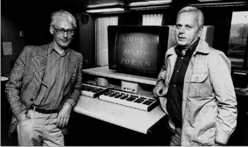

C and Pascal are imperative languages, where the emphasis is on the actions that the computer should do. In the procedural paradigm, (or programming style), programs consist of a hierarchy of subprograms (procedures or functions) which process external data.
Object-oriented programming, or OOP, is a different style of programming. In the OOP paradigm, programs are communities of somewhat self-contained components (calledobjects) in which data and actions are combined.

The first object-oriented language was SIMULA, a simulation language designed by the Scandinavian computer scientists Ole-Johan Dahl and Kristen Nygaard in 1967. Much of the terminology we use today to describe object-oriented languages comes from their original 1967 report.